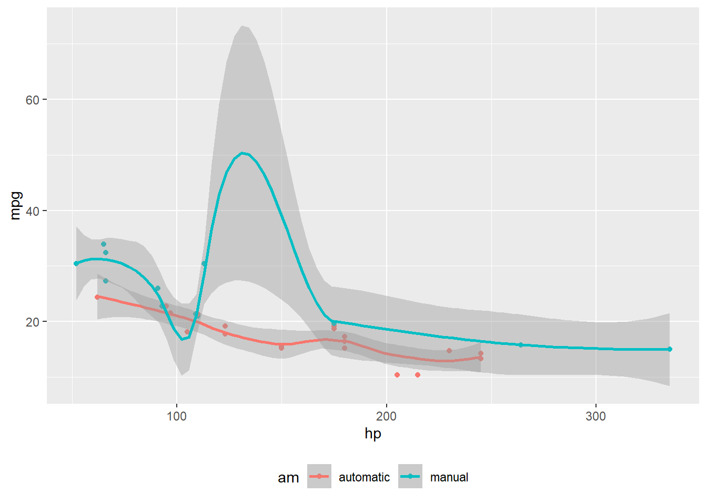

Rodrigo Hermont Ozon – Curriculum Vitae
Economist (econometrics) and Data Scientist

Resumé
Econometrician and PhD. researcher at Systems and Industrial Engineering at PUCPR, Msc. in Economic Development from UFPR, experienced for over 15 years in his career with data analysis, modeling, processing and presentation of information in knowledge and intelligent decision making.
2022 to 2027 (expected)
PhD Candidate – Systems & Industrial Eng.
Research in applied time series analysis, Financial Econometrics, Bayesian Econometrics, Portfolio Multiobjective Optimization, Modelling Extremal Events.
Please, visit our research project by visiting PIBIC AgroFinance Page
2011
MSc. in Economic Development
Course completed at UFPR with an emphasis on big data, multivariate analysis and econometrics. Thesis available at acervodigital.ufpr.br.
Check out the post in IBQP/Sebrae website visiting here.
2007
Bachelor Degree in Economics
Undergraduate studies at UFPR, featuring a thesis that was honored and awarded, which was subsequently transformed into a research project at the UFPR Laboratory of Statistics and GeoInformation, which can be viewed at leg.ufpr.br.
Check out the Economics undergraduate course at UFPR.
Last publications
Ozon, R., H. (2024). Evaluation Declaration for SEMIC/SEMITI. In XXXI Scientific Initiation Seminar at PUCPR.
Link
Ozon, R., H. (2024–2025). Scientific Initiation Advisorship (PUCPR).
Link
Ozon, R., H., Reynoso-Meza, G. (2024). Comparative Analysis of Fuzzy Regression Models and Multicriteria Decision-Making for Commodity Market Forecasting Scenarios. In SBPO.
[Material: paper_6925.pdf]
Ozon, R., H., Reynoso-Meza, G. (2024). Predictive Maintenance Strategies in Agriculture Using Survival Analysis. In SBA. [Material: galoa-proceedings–sbpo-2024–193764.pdf]
Ozon, R., H., Reynoso-Meza, G. (2024). Efficiency and Efficacy Comparison between NSGA-II and Differential Evolution in Multi-Objective Portfolio Optimization. In ICPR Americas 2024 (Ohio University). [Material: Optimization__Paper_ID.pdf]
Ozon, R., H., (2024). Integrating GAMLSS and Bayesian MSGARCH Models for Enhanced Forecasting of Commodity Price Returns: A Novel Approach in Financial Econometrics. In 1st SouthStat Meeting (UFPR). [Material: _poster Rodrigo Hermont Ozon.pdf]
Ozon, R., H. (2023). The Use of Time Series Disaggregation with the tempdisagg Package in Econometric Models. In R Day (UFPR). [Material: _Presentation__Desagragação_de_Séries_Temporais_R_Day]
Ozon, R., H., Reynoso-Meza, G. (2023). Portfolio Optimization with GARCH Models Using Multiple Time Windows for Pareto Frontiers. In APREPRO. Link
Ozon, R., Viana, R. (2024). Impact of Sentiment Analysis on the Volatility and Structural Breaks in Agricultural Commodity Prices. In See the publishing plan for this paper in this presentation
Ozon, R. (2024). Ablation Study of a CNN+LSTM Architecture for Time Series Forecasting of Corn Price Returns.
Ozon, R., Guedes, R. (2024). Blending Forecasting Models for Commodities Portfolio Optimization.
Ozon, R. (2024). Impact of the Russia-Ukraine War on Corn Prices, Returns, and Volatility: A Quasi-Experimental Approach.
Ozon, R., Guedes da Silva, R. T. (2024). A Commodities Portfolio Optimization Model Recommendation: Blending Time Series Forecasting Models in Pareto Front Scenarios.
Ozon, R., de Lima, J. D., Dranka, G. (2024). Enhancing Grain Portfolio Risk Management with GAMLSS and MSGARCH. Avaiable in https://doity.com.br/anais/24ebfin/area/36699
Ozon, R., Reynoso-Meza, G. (2024). Improving Risk Management in Grain Portfolios: The Role of GAMLSS and Bayesian MSGARCH Models.
Ozon, R., Reynoso-Meza, G. (2023). Econometric Prices Forecasting Approach and Multiobjective Optimization for Commodity Portfolio Decision-Making.
“You can be only mathematician with econometrics.” (Xie, 2015)
Quarto é uma ferramenta poderosa para compor documentos dinâmicos (xie2015?).
Este é um exemplo de texto com uma nota de rodapé1.
…
Quarto enables you to weave together content and executable code into a finished document. To learn more about Quarto see https://quarto.org.
When you click the Render button a document will be generated that includes both content and the output of embedded code. You can embed code like this:
Code
1 + 1[1] 2You can add options to executable code like this
[1] 4The echo: false option disables the printing of code (only output is displayed).
Code
library(tidyverse)
library(palmerpenguins)
penguins |>
mutate(
bill_ratio = bill_depth_mm / bill_length_mm,
bill_area = bill_depth_mm * bill_length_mm
)- 1
-
Take
penguins, and then, - 2
- add new columns for the bill ratio and bill area.
# A tibble: 344 × 10
species island bill_length_mm bill_depth_mm flipper_length_mm body_mass_g
<fct> <fct> <dbl> <dbl> <int> <int>
1 Adelie Torgersen 39.1 18.7 181 3750
2 Adelie Torgersen 39.5 17.4 186 3800
3 Adelie Torgersen 40.3 18 195 3250
4 Adelie Torgersen NA NA NA NA
5 Adelie Torgersen 36.7 19.3 193 3450
6 Adelie Torgersen 39.3 20.6 190 3650
7 Adelie Torgersen 38.9 17.8 181 3625
8 Adelie Torgersen 39.2 19.6 195 4675
9 Adelie Torgersen 34.1 18.1 193 3475
10 Adelie Torgersen 42 20.2 190 4250
# ℹ 334 more rows
# ℹ 4 more variables: sex <fct>, year <int>, bill_ratio <dbl>, bill_area <dbl>Tese
\widehat{Y} = \alpha +\beta X_t +\epsilon
Teste b
matplotlib.py
import matplotlib.pyplot as plt
plt.plot([1,23,2,4])
plt.show()Testing
My house
Code
library(leaflet)
leaflet() %>%
addTiles() %>% # Add default OpenStreetMap map tiles
addMarkers(lng=174.768, lat=-36.852, popup="The birthplace of R")Code
library(ggplot2)
mtcars2 <- mtcars
mtcars2$am <- factor(
mtcars$am, labels = c('automatic', 'manual')
)
ggplot(mtcars2, aes(hp, mpg, color = am)) +
geom_point() +
geom_smooth(formula = y ~ x, method = "loess") +
theme(legend.position = 'bottom')

This will appear in portrait mode.
This will appear in landscape.
This will appear in portrait mode again.
Acknowledgments
I am grateful for the insightful comments offered by the anonymous peer reviewers at Books & Texts. The generosity and expertise of one and all have improved this study in innumerable ways and saved me from many errors; those that inevitably remain are entirely my own responsibility.
Footnotes
Este é o conteúdo da minha nota de rodapé.↩︎
Citation
BibTeX citation:
@online{hermont_ozon2025,
author = {Hermont Ozon, Rodrigo},
title = {\textless Span Style=“font-Size:18pt;”{\textgreater Rodrigo}
{Hermont} {Ozon} -\/- {Curriculum}
{Vitae\textless/span\textgreater{}}},
date = {2025-07-28},
url = {https://example.com/summarizing-output},
langid = {en}
}
For attribution, please cite this work as:
Hermont Ozon, Rodrigo. 2025. “<Span
Style=‘font-Size:18pt;’>Rodrigo Hermont Ozon --
Curriculum Vitae</Span>.” July 28, 2025. https://example.com/summarizing-output.